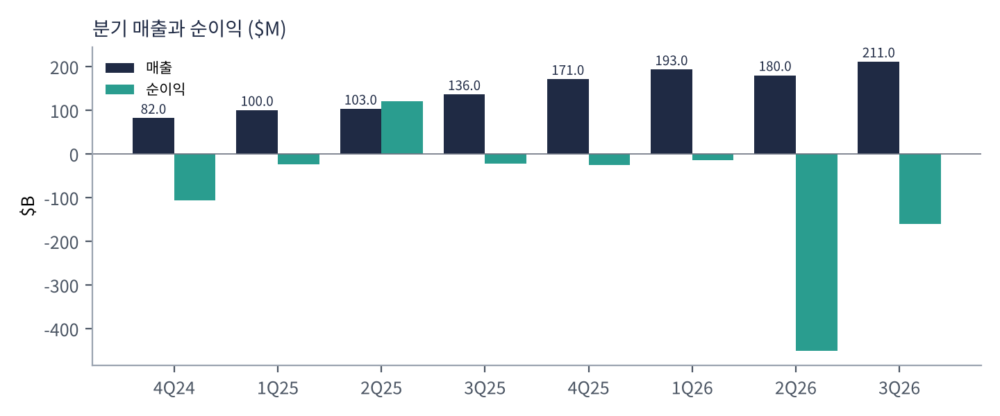
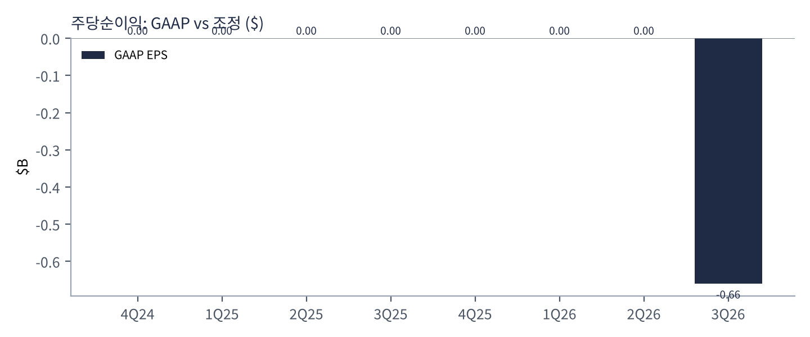
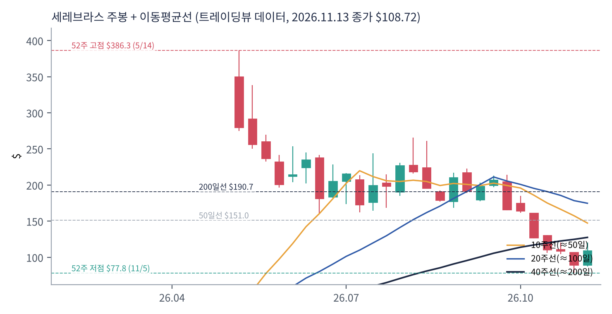
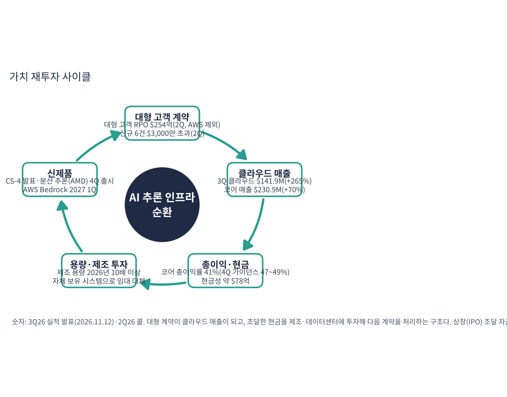

세레브라스는 웨이퍼 크기의 AI 칩으로 만든 시스템과 이를 클라우드로 빌려주는 추론 서비스를 파는 회사다. 매출이 빠르게 늘고 대형 계약 잔고가 크지만 GAAP 적자 폭이 크고 고객 집중이 높은 신규 상장 회사다.
| 항목 | 내용 |
|---|---|
| 종목 | Cerebras Systems (CBRS) · NASDAQ · AI 추론 인프라 · 캘리포니아 서니베일 |
| 멀티플 | PER 산출 불가(적자) · P/S 31.47배 (11/13 종가 $108.72) |
| 최근 분기(3Q26) | GAAP 매출 $210.8M(+55%), 코어 매출 $230.9M(+70%), 클라우드 $141.9M(+265%), GAAP 영업이익률 -106% |
| 가이던스(4Q26) | 코어 매출 $310~330M, 코어 총이익률 47~49%, 코어 영업이익률 -1~+1% |
| 현금·부채 | 스캐너: 현금 $7,805M, 총차입금 $1,450M, TTM 매출 $756M |
| 직책 | 인물 | 역할·특징 |
|---|---|---|
| CEO | 앤드루 펠드먼 | 빠른 추론이 AI 인프라의 차별점이라고 설명 |
| CFO | 밥 코민 | 용량·마진 가이던스, 3Q를 총이익률 저점으로 설명 |
경영 스타일: '용량을 먼저 늘려 계약 잔고를 매출로 바꾼다'. 2026년을 '기반 구축의 해'로 부르고 2027년 코어 매출을 3배 이상으로 키운다는 계획을 밝혔다(구체 범위 없음). 내부통제 중요한 미비점이 공시에 언급됐다.
CS-4 시스템 발표, AMD GPU와 결합한 분산 추론(처리량 최대 5배), AWS Bedrock 제공 예정.
OpenAI 등 대형 계약과 신규 기업 고객(Figma·Cognition·CrowdStrike 등)으로 추론 수요를 흡수한다.
다음 실적발표(4Q26)는 세 가지 질문에 답하는 자리다.
질문 1. 코어 매출이 가이던스($310~330M)로 급증하는가?
| 확인할 숫자 | 좋아지면 | 나빠지면 |
|---|---|---|
| 4Q 코어 매출 $310~330M(3Q $230.9M), 2026 코어 $940~960M | 가이던스 이상이면 ②클라우드 매출 고리가 켜진다 | 미달이면 용량 확보 일정이 지연된 신호다 |
질문 2. 코어 총이익률이 47~49%로 개선되는가?
| 확인할 숫자 | 좋아지면 | 나빠지면 |
|---|---|---|
| 3Q 코어 총이익률 41%, 4Q 가이던스 47~49%, 코어 영업이익률 -1%~+1% | 개선되면 ③이익 고리가 약한 지점에서 벗어난다 | 부진이면 임대 시스템 비용이 계속 이익을 깎는다 |
질문 3. 고객 집중과 분산 추론·AWS 일정은?
| 확인할 숫자 | 좋아지면 | 나빠지면 |
|---|---|---|
| MBZUAI 2Q 매출의 34%, OpenAI 2Q $56.8M, 분산 추론 4Q 출시, AWS 2027 1Q | 집중도가 낮아지고 일정이 지켜지면 ①계약 고리가 다변화된다 | 집중이 유지되거나 일정이 밀리면 위험이 커진다 |
한 줄 판정 규칙: 첫 질문이 가이던스를 달성하면 약한 고리(적자·마진)가 풀리고, 세 번째 질문이 나쁘면 RPO 전환에 대한 불확실성이 커진다.
일정: 2027-03-03 예정(트레이딩뷰 일정, 회사 확정 확인 필요).
| 분기 | 매출 | 순이익 | EPS | 조정 EPS | 특이 사항 |
|---|---|---|---|---|---|
| 4Q24 | $82.0M | $-106.0M | -0.49 | – | 4Q24 EPS는 상장 전 주식 기준 |
| 1Q25 | $100.0M | $-24.0M | -0.11 | – | |
| 2Q25 | $103.0M | $120.0M | 0.56 | – | |
| 3Q25 | $136.0M | $-22.0M | -0.10 | – | |
| 4Q25 | $171.0M | $-26.0M | -0.12 | – | |
| 1Q26 | $193.0M | $-14.0M | -0.06 | – | |
| 2Q26 | $180.0M | $-451.0M | -1.97 | – | 상장(2Q26) 전후 주식 수 혼재 |
| 3Q26 | $211.0M | $-161.0M | -0.66 | – | 3Q 매출 $210.8M(+55%), 상장 후 첫 완전 분기 |


값은 트레이딩뷰 스캐너 분기 이력이다. 세레브라스는 2026년 2분기에 상장해 그 이전 분기와 2분기의 EPS는 주식 수 기준이 섞이므로 임의로 채우지 않고 '–'로 뒀다(3Q26만 표시). 조정 EPS는 회사가 '코어(비GAAP)' 매출·마진만 발표해 열은 '–'다. GAAP 매출은 고객 워런트 상각(2Q $44.3M)을 차감한 값이다. 분기 설비투자·잉여현금은 구하지 못했다.
흐름 요약: GAAP 매출이 4Q24 $82M에서 3Q26 $211M으로 늘었다. 코어 매출은 3Q $230.9M(+70%)이고 GAAP 영업이익률은 -106%, 코어 영업이익률은 -14%다.
| 항목 | 값 | 비고 |
|---|---|---|
| GAAP 클라우드·기타 | $141.9M(+265%) | 3Q, 회사 |
| 코어 총매출 | $230.9M(+70%) | 3Q, 회사 |
| RPO | $254억(2Q) | AWS 등 하이퍼스케일러 제외(회사) |
| 고객 집중(2Q) | MBZUAI 34% · OpenAI $56.8M | 공시 인용 |
클라우드 서비스가 중심으로 옮겨 가고 하드웨어는 줄었다(2Q 클라우드 $126.0M·하드웨어 $54.1M, 보도). 고객 집중이 크다는 점이 위험이다.
세레브라스는 '가장 빠른 AI 추론 인프라를 공급하는 것'을 목표로 한다.
| 축 | 최근 움직임 |
|---|---|
| 제품 | CS-4, 분산 추론(AMD 연동) |
| 채널 | 직접 클라우드, AWS Bedrock(2027 1Q 예정) |
| 용량 | 제조 용량 2026년 10배 이상, 2027은 3~4배 추가 계약 |

| 이동평균 | 값 | 종가 대비 | 해석 |
|---|---|---|---|
| 5일선 | $99.58 | +9.2% | 현재가가 위 |
| 20일선 | $104.83 | +3.7% | 현재가가 위 |
| 50일선 | $151.02 | -28.0% | 현재가가 아래 |
| 100일선 | $176.60 | -38.4% | 현재가가 아래 |
| 200일선 | $190.66 | -43.0% | 현재가가 아래 (-43%) |
주봉 흐름: 52주 고점 $386.34(5/14), 52주 저점 $77.84(11/5). 현재가 $108.72는 200일선 $190.66보다 아래, 50일선 $151.02보다 아래에 있다.
| 규칙 | 기준 | 현재 값 | 신호 |
|---|---|---|---|
| 장기 추세 필터 | 종가 vs 200일선 | $108.72 < $190.66 | 매도 |
| 중장기 교차 | 50일선 vs 200일선 | $151.02 < $190.66 | 매도 |
| 단기 교차 | 20일선 vs 50일선 | $104.83 < $151.02 | 매도 |
| 돈키언 채널 | 55일 고가 $222.50 / 저가 $77.84 | 중간값 $150.17 아래 | 매도 |
| 1개월 모멘텀 | 21거래일 수익률 | -23.5% (기준 $142.17) | 매도 |
| 3개월 모멘텀 | 63거래일 수익률 | -56.9% (기준 $251.98) | 매도 |
| 6개월 모멘텀 | 126거래일 수익률 | -61.1% (기준 $279.72) | 매도 |
| 12개월 모멘텀 | 252거래일 수익률 | -65.0% (기준 $311.07) | 매도 |
| 종합 (8개 평균) | -1.00 | 강한 매도 |
해석: 8개 신호 중 매수 0개, 매도 8개(점수 -1.00, 강한 매도)다. 14일 ATR $11.50 (10.6%).
| 가격·조건 | 무엇이 바뀌나 | 의미 |
|---|---|---|
| $190.66 돌파 | 200일선 | 매도 → 매수 |
| 50일선이 200일선 위로 | 50/200 교차 | 매도 → 매수 |
| 20일선이 50일선 위로 | 20/50 교차 | 매도 → 매수 |
| $150.17 돌파 | 돈키언 중간값 | 매도 → 매수 |
| $142.17 돌파 | 1개월 기준가 | 매도 → 매수 |
| 구분 | 가격대 | 근거 |
|---|---|---|
| 저항 1 | $151.02 | 50일선 |
| 저항 2 | $176.60 | 100일선 |
| 지지 1 | $104.83 | 20일선 |
| 지지 2 | $99.58 | 5일선 |
점수는 -1.00(강한 매도)다. 14일 ATR은 $11.50로 현재가의 10.6%다. 가까운 저항 $151.02을 종가로 넘는지와 가까운 지지 $104.83를 지키는지가 신호 전환의 기준이다. (내 가정, 매매 권유 아님)
| 악재 요인 | 내용 | 강도 |
|---|---|---|
| 고객 집중 | MBZUAI 2Q 매출 34%, OpenAI 협약 매출 비중 확대 | 높음 |
| 적자·마진 | GAAP 영업이익률 -106%, 3Q가 총이익률 저점 | 높음 |
| 내부통제 | 중요한 미비점(공시), 공시 통제 비효율 | 중간 |
| 주가 변동성 | 52주 고점 $386 → 저점 $78(차트) | 중간 |
| 티커 | 회사 | PER(TTM) | PEG | P/S | EPS 성장(YoY) |
|---|---|---|---|---|---|
| CBRS | 세레브라스 | 적자 | – | 31.47배 | – |
| NVDA | 엔비디아 | 20.6배 | 0.17 | 13.32배 | +125% |
| AMD | AMD | 116.1배 | 1.00 | 21.40배 | +127% |
| AVGO | 브로드컴 | 44.3배 | 0.46 | 19.98배 | +100% |
| CRWV | 코어위브 | 적자 | – | 3.20배 | -159% |
| SMCI | 슈퍼마이크로 | 5.6배 | 0.02 | 0.37배 | +283% |
CBRS 첫 행은 적자라 PER·PEG가 없다. CRWV도 적자다. 동종은 사업 모델이 달라 참고용이다.
세레브라스는 현금성 자산 $7,805M이 총차입금 $1,450M보다 커 순현금 약 $6,355M이고, 상장 조달 자금이 런웨이를 크게 늘렸다. 다만 GAAP 영업손실이 분기 약 $223M(영업이익률 -106%×매출 $210.8M, 내 계산)이고 설비투자가 커서 실제 현금 소모는 확인이 필요하다.
| 지표 | 값 | 계산·출처 | 해석 |
|---|---|---|---|
| 현금 | $7,805M | 스캐너 | 2Q 말 $8.6B에서 감소(회사) |
| 총차입금 | $1,450M | 스캐너 | 순현금 약 $6,355M(내 계산) |
| 분기 GAAP 영업손실 | 약 $223M | 3Q 영업이익률 -106%(회사) | 영업손실만 기준, 설비투자 제외(확인 필요) |
| 런웨이(영업손실 기준) | 약 28분기 | $6,355M ÷ $223M(내 계산) | 설비투자를 포함하면 짧아짐 |
| 기준 | 값 | 비고 |
|---|---|---|
| P/S (TTM) | 31.47배 | 스캐너 |
| 동종 | NVDA 13.3, AVGO 20.0, AMD 21.4, CRWV 3.2, SMCI 0.4 | 11/13 스캐너 |
해석: P/S 31배는 AI 반도체·인프라 동종보다 높다. TTM 매출 $756M이 빠르게 늘고 있어(분기 $210.8M) P/S가 내려갈 여지가 있으나 적자 기업이라 PER 비교는 불가하다(내 가정 시나리오 없음).
| 지표 | 값 | 판정 |
|---|---|---|
| PER (GAAP TTM) | 산출 불가 | 순손실 |
| 조정 EPS | – | 코어 매출·마진만 발표 |
| 코어 영업이익률(3Q) | -14% | 4Q 가이던스 -1~+1% |
| TTM EBITDA | – | 스캐너 값 없음 |
| 방식 | PER | EPS 성장률 | PEG | 판정 |
|---|---|---|---|---|
| 트레이딩뷰 (GAAP TTM) | – | – | 산출 불가 | 적자 |
| 조정 EPS 기준 | – | – | 산출 불가 | 조정 EPS 미발표 |
판정: 적자 기업이라 PEG를 산출할 수 없다.대신 4Q 가이던스의 코어 영업이익률 -1~+1%(손익분기)와 2027년 코어 매출 3배 이상 계획이 확인 지점이다.

세레브라스의 사이클은 대형 고객 계약 → 클라우드 매출 → 총이익·현금 → 용량·제조 투자 → 신제품이다. 상장으로 조달한 현금이 용량 투자의 출발점이 되고, 늘어난 용량이 계약 잔고를 매출로 바꾼다.
| 고리 | 현재 숫자 | 고리 강도 | 약해지는 신호 |
|---|---|---|---|
| ① 대형 고객 계약 | RPO $254억(2Q), 신규 6건 > $30M | 강함 | 고객 집중(MBZUAI·OpenAI) |
| ② 클라우드 매출 | 3Q $141.9M(+265%) | 강함 | 용량 지연 |
| ③ 총이익·현금 | 코어 총이익률 41%, 현금 $78억 | 약함 | 임대 시스템 비용·영업손실 |
| ④ 용량·제조 투자 | 제조 용량 10배 이상 | 보통 | 설비투자 부담 |
| ⑤ 신제품 | CS-4·분산 추론·Bedrock | 보통 | 출시 일정 |
구조: ①②는 강하지만 ③이 약하다. 4Q에 코어 총이익률이 개선되지 않으면 ④의 투자만 늘고 사이클이 돌지 않는다.